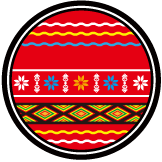

<div class="row banner">
  <div class="random-language col">
    <div class="banner-title"> <span class="font-div">每</span><span class="font-div">日</span><span class="font-div">族</span><span class="font-div">語</span></div>
    <div class="banner-content">
      <div class="zu-mark"><span class="zu-name">阿美族 </span></div>
      <div class="vocabulary">aahowiden</div>
      <div class="translation">值得去感謝者</div>
    </div>
  </div>
  <div class="random-festival col">
    <div class="banner-title"><span class="font-div">近</span><span class="font-div">期</span><span class="font-div">節</span><span class="font-div">慶</span><span class="font-div">之</span><span class="font-div">一</span></div>
    <div class="banner-content">
      <div class="festival-content">
        <div class="zu-mark"><span class="zu-name">鄒族 </span></div>
        <div class="festival-name"> 
          <div class="festival-en">Mayasvi</div>
          <div class="festival-ch">瑪雅斯比祭典(戰祭)</div>
        </div>
        <div class="festival-time">約 二月</div>
      </div>
      <div class="festival-img"></div>
    </div>
  </div>
</div>